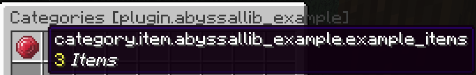
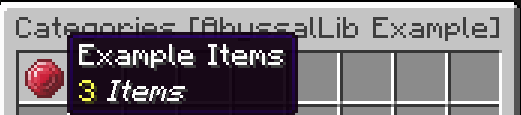

Custom Item Categories
Item Categories (ItemCategory) are the interactive buttons that appear within the main Item Menu. By default, when no category is explicitly created, an All category is automatically generated containing every item registered by your plugin.
However, as your plugin grows, using Item Categories allows you to neatly organize items (e.g., Weapons, Magic, Materials) as well as hide specific items you don't want visible in the public Item Menu.
Creating an ItemCategory
To begin, you will need to create a DeferredRegistry for the ItemCategory and then use the provided builder to construct the category itself.
Just like with items, call ItemCategories.CATEGORIES.apply() inside your onEnable() to register them, and launch the server.

You will notice that the category title currently displays an untranslated key. To fix this, we will head over to our previously created Pack class (from the Create Your First Item guide) and add the necessary translation strings.
Now, when you regenerate the pack and load into the server, you will see the correctly formatted title for the category and the menu.
